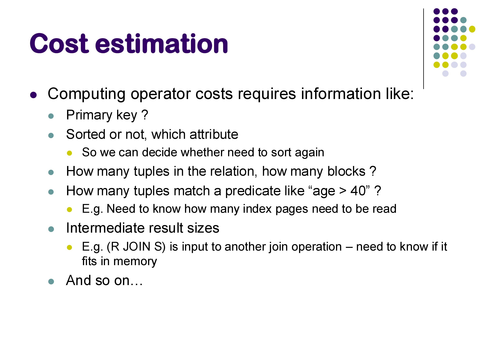
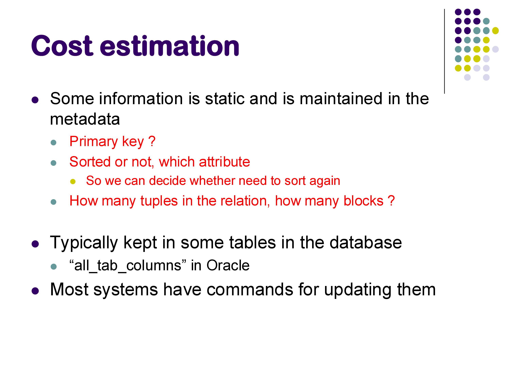
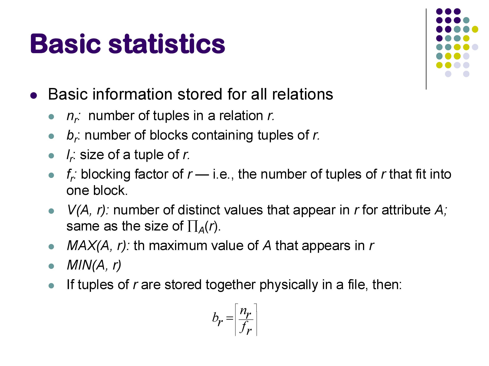
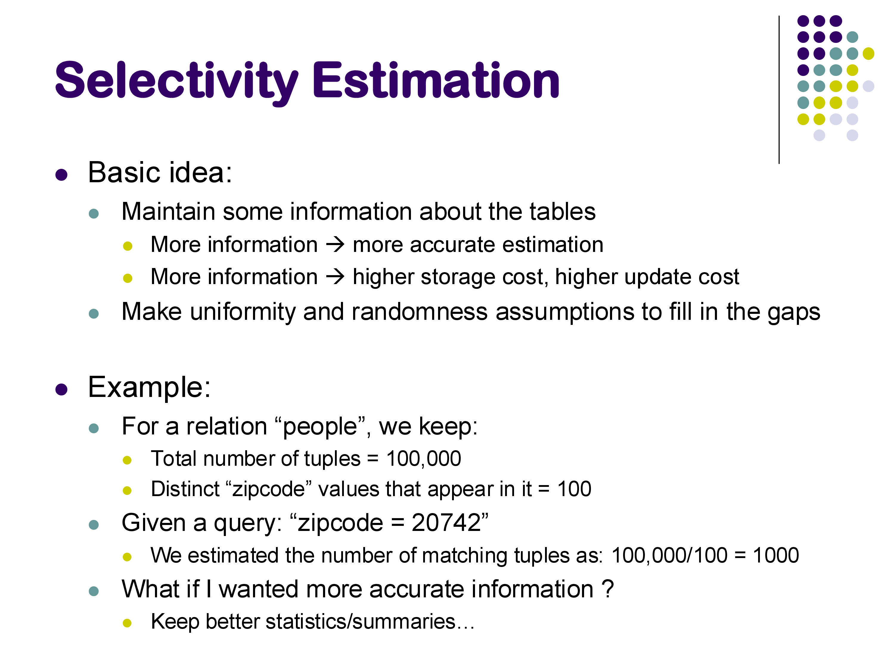
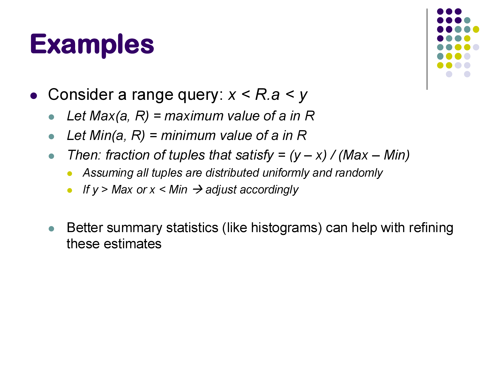
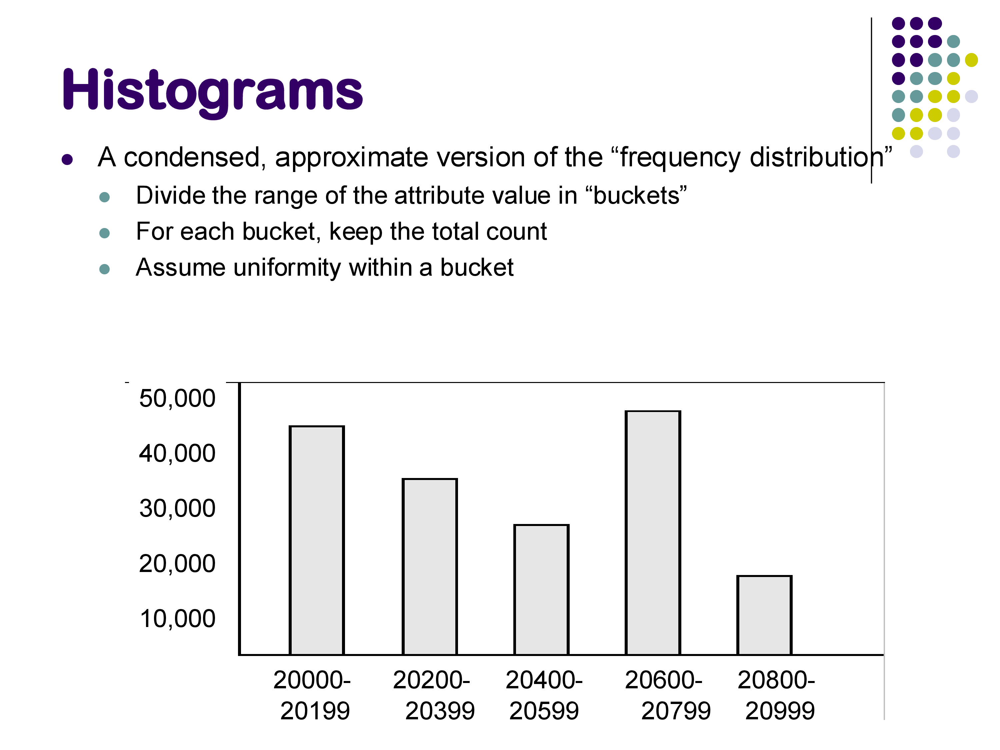
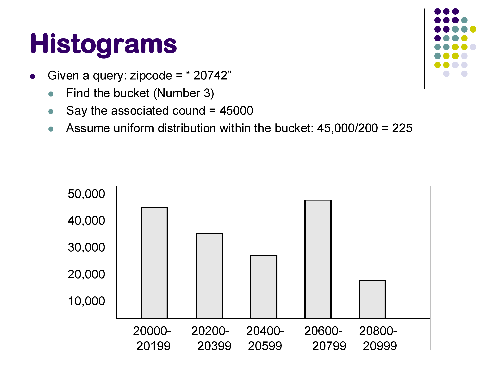
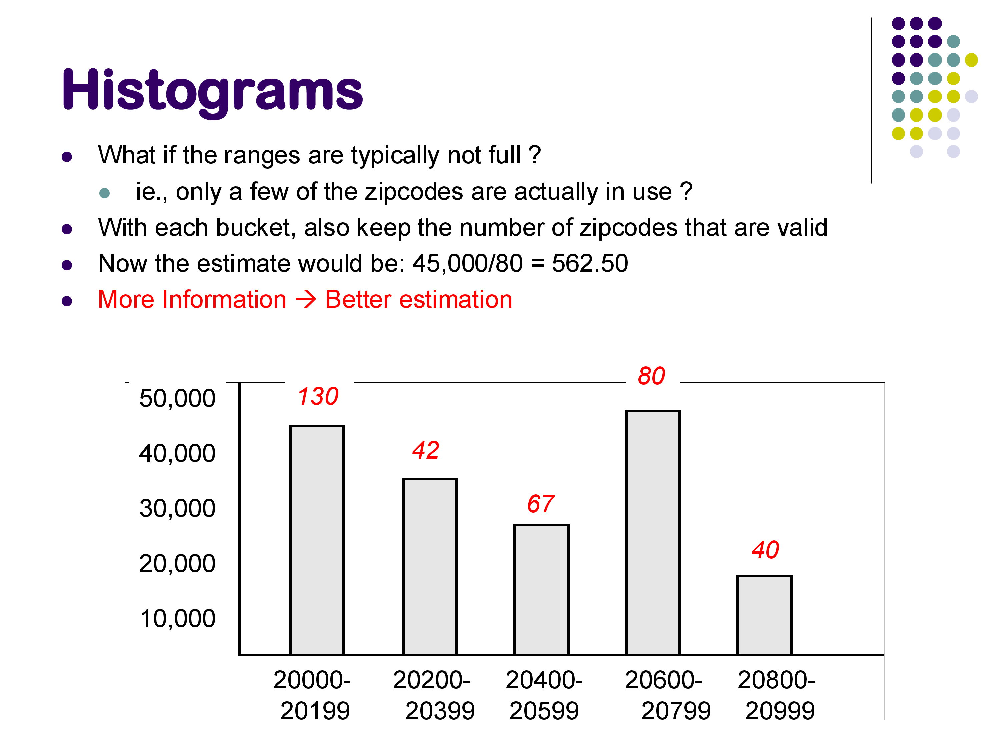
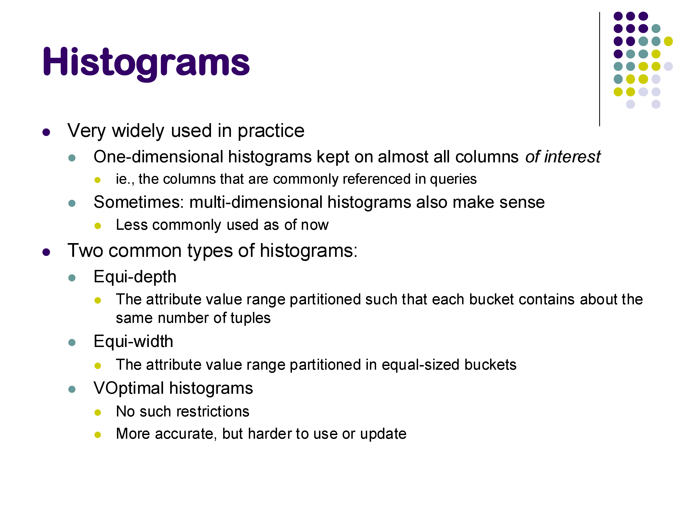

CMSC424: Query Processing — Cost Estimation and Statistics
Instructor: Amol Deshpande
1. Introduction
Once we know how to generate equivalent query plans, the optimizer must choose among them. To do that, it needs to estimate the cost of each plan. Cost estimation breaks into two parts:
Operator cost formulas: given input sizes and available algorithms, how expensive is this operator? We covered these when discussing operator implementations — hash join costs O(b_R + b_S), sort-merge join costs b_R + b_S (if pre-sorted), and so on.
Intermediate result size estimation: what is the size of the output of each operator in the plan tree? This is the harder part, and it is the focus of these notes.
The dependency is clear: to estimate the cost of a sort operator, we need to know how much data it will sort — which is the output of the operator below it in the plan tree, which is itself an estimate. Errors compound: an inaccurate row count at the bottom of the tree can cascade into a completely wrong algorithm choice at the top.

The approach universally used in practice: maintain a set of pre-computed statistics about each relation, and use those statistics together with simplifying assumptions (primarily: uniformity — values are distributed evenly across their range) to estimate result sizes. The more statistics we maintain, the more accurate our estimates — at the cost of more storage and more work to keep them up to date.
2. Basic Statistics: What Databases Store

Every database system maintains a catalog of statistics for each relation. In PostgreSQL, two system tables are most relevant:
pg_class: stores per-relation metadata including: - reltuples: estimated number of tuples (\(n_r\)) - relpages: number of disk blocks (\(b_r\))
pg_stat_user_tables and pg_stats: stores per-column statistics including: - null_frac: fraction of values that are NULL - n_distinct: number of distinct values (\(V(A, r)\)); negative values mean “this fraction of rows have distinct values” (a PostgreSQL convention for when V is proportional to table size) - avg_width: average byte width of values - most_common_vals, most_common_freqs: the most frequently occurring values and their exact frequencies - histogram_bounds: bucket boundaries for a histogram (discussed below)
These statistics are not automatically updated on every insert or delete. In PostgreSQL, they are computed by the VACUUM ANALYZE command, which you must run explicitly (or configure autovacuum to run periodically). On a fresh database without statistics, the optimizer has to fall back on very rough defaults.

The standard notation for these statistics:
| Symbol | Meaning |
|---|---|
| \(n_r\) | number of tuples in relation \(r\) |
| \(b_r\) | number of blocks holding \(r\)’s tuples |
| \(l_r\) | size of a single tuple in bytes |
| \(f_r\) | blocking factor: tuples per block; \(b_r = \lceil n_r / f_r \rceil\) |
| \(V(A, r)\) | number of distinct values of attribute \(A\) in \(r\) |
| \(\text{MAX}(A, r)\), \(\text{MIN}(A, r)\) | maximum and minimum values of \(A\) in \(r\) |
3. Selectivity Estimation for Selection Predicates
The selectivity of a predicate is the fraction of tuples that satisfy it. Multiplying by \(n_r\) gives the estimated result size.

3.1 Equality Predicates: \(\sigma_{A = v}(r)\)
The simplest approach: if there are \(V(A, r)\) distinct values and we assume a uniform distribution, then each value accounts for \(1/V(A, r)\) of the tuples. The estimated result size is: \[\text{estimate} = \frac{n_r}{V(A, r)}\]
Example: the posts table has 25,800 rows and 175 distinct values of score. For the predicate score = 10, the uniform estimate is \(25800 / 175 \approx 147\) rows.
In reality, score = 10 matches about 400 rows — off by a factor of 2.7. This is acceptable for optimization: a factor-of-2 error rarely changes which plan is best. A factor-of-10 error can cause the optimizer to choose a nested loops join when it should use hash join, or to use a secondary index when a sequential scan would be faster.
3.2 Handling Skew: Most Common Values
The uniform assumption breaks down for skewed distributions — when some values are far more frequent than others. The classic example is score = 0 in the Stack Overflow data: roughly one-sixth of posts have score 0 (the default for posts with no votes). The uniform estimate of \(1/175\) would massively undercount this.
PostgreSQL handles skew by explicitly storing the most common values (MCVs) for each column, along with their exact frequencies. Internally this is a list of the top ~100 most frequent values. When a query predicate matches a value in the MCV list, PostgreSQL uses the exact frequency rather than the uniform estimate.
For score = 0, PostgreSQL knows the exact count from its MCV list and estimates it accurately. For score = 10 (also in the MCV list), it uses the actual observed frequency. For rare values not in the list, it falls back to the uniform assumption using the residual probability after accounting for all MCV frequencies.
For predicates that PostgreSQL cannot analyze statistically — for example, score % 10 = 5 — it falls back to a magic constant (empirically around \(1/200\)). This is an acknowledged weakness: the estimate for score % 10 = 5 was ~129 rows, while the actual count was ~1,860. The modulo operator is unusual enough that PostgreSQL has no statistics model for it; a reasonable guess would have been \(n_r / 10 \approx 2580\).
3.3 Range Predicates: \(\sigma_{x \leq A \leq y}(r)\)
If we know MAX\((A, r)\) and MIN\((A, r)\), and assume uniform distribution: \[\text{selectivity} = \frac{y - x}{\text{MAX}(A, r) - \text{MIN}(A, r)}\]
This gives a good estimate when values are roughly uniformly distributed across the range, and allows the optimizer to correctly recognize that a very wide range (e.g., BETWEEN 10 AND 1000) will return many rows — avoiding a secondary index scan that would be slower than a sequential scan for high-cardinality results.

4. Histograms
Basic statistics (V, MAX, MIN, MCVs) are compact and easy to maintain, but they still rely on the uniform distribution assumption for most predicates. Histograms provide a more accurate frequency distribution at the cost of somewhat more storage.

A histogram divides the attribute’s value range into buckets and records the approximate number of tuples falling in each bucket. Within each bucket, uniformity is still assumed, but the bucket-level information captures non-uniform distribution across the overall range.
Example: a histogram on zipcode might have these buckets:
| Bucket | Range | Count |
|---|---|---|
| 1 | 20000–20199 | 42,000 |
| 2 | 20200–20399 | 33,000 |
| 3 | 20400–20599 | 45,000 |
| 4 | 20600–20799 | 28,000 |
| 5 | 20800–20999 | 52,000 |

To estimate WHERE zipcode = 20742: zipcode 20742 falls in bucket 3 (range 20400–20599, 200 values, count 45,000). Assuming uniformity within the bucket: \(45000 / 200 = 225\) tuples.

If we also track the number of distinct non-NULL values within each bucket (say, 80 distinct zipcodes in bucket 3 instead of all 200 in the range), the estimate improves: \(45000 / 80 = 562.5\) tuples — better, because it accounts for values in the range that simply don’t appear in the data.
Worked example — range query using a histogram. Suppose we have:
| Bucket | Range | Count |
|---|---|---|
| 1 | 0–4 | 100 |
| 2 | 5–9 | 300 |
Query: WHERE A BETWEEN 2 AND 7. This spans parts of both buckets: - From bucket 1: values 2, 3, 4 → 3 of 5 values → \(100 \times 3/5 = 60\) tuples - From bucket 2: values 5, 6, 7 → 3 of 5 values → \(300 \times 3/5 = 180\) tuples - Total estimate: \(60 + 180 = 240\) tuples
4.1 Types of Histograms

There are three standard histogram variants:
Equi-width histograms: each bucket covers an equal-sized value range (e.g., each covers 200 zip codes). The count per bucket can vary. This is the type illustrated in the examples above.
Equi-depth histograms: each bucket contains the same number of tuples, but the bucket boundaries vary. PostgreSQL uses equi-depth histograms. They adapt better to non-uniform distributions: high-density regions get narrow buckets (more precise estimates there), while sparse regions get wide buckets. In the PostgreSQL pg_stats table, the histogram_bounds column stores the bucket boundaries for an equi-depth histogram on each column.
V-optimal histograms: choose bucket boundaries to minimize the total estimation error across all possible queries. Theoretically the best, but harder to compute and maintain. Less commonly used in practice.
PostgreSQL stores histograms even for relatively small tables, though they are most beneficial for large ones. The pg_stats table contains both most_common_vals (for the MCV list) and histogram_bounds (for the histogram) — they are used together, with MCVs handling known skew and the histogram handling the remaining range.
5. What PostgreSQL Actually Stores: A Live Look
Running SELECT * FROM pg_stats WHERE tablename = 'posts' AND attname = 'score' on the Stack Exchange database reveals:
null_frac = 0.0— no NULLs in the score columnn_distinct = 175— 175 distinct valuesmost_common_vals = {1, 2, 0, 3, 4, ...}— most frequent scores in decreasing ordermost_common_freqs = {0.047, 0.040, 0.038, ...}— corresponding frequencies (as fractions of rows)histogram_bounds = {-11, -9, -8, ..., 91, 92, 94, ...}— equi-depth histogram boundaries
The MCV list shows that scores 0–3 together account for roughly 60% of all posts. Any predicate on these values uses the exact stored frequency. For rare scores not in the MCV list, the optimizer uses the histogram to interpolate.
The pg_class table, queried with SELECT relname, reltuples, relpages FROM pg_class WHERE relname = 'badges', confirms that it stores the estimated row count and page count used by the optimizer for scan cost calculations.
6. Why Accuracy Matters — and When It Fails
In a demo with the three-table join query (posts ⋈ comments ⋈ users), PostgreSQL estimated exactly 46,385 result rows and got exactly 46,385. This precision arises because: (1) the table row counts were accurate, (2) the join predicates were foreign key relationships with no filtering, so the join sizes were deterministic.
Add even a simple predicate like score < 10, and small errors start to appear — though PostgreSQL still performs well here because score < 10 maps into a well-understood region of the histogram.
The failure case is score % 10 = 5. PostgreSQL estimated ~129 rows; the actual count was ~1,860. The optimizer used a magic constant of 1/200 for predicates it cannot analyze. The correct rough estimate (knowing %10 yields 10 equally likely values) would be \(n_r/10 \approx 2,580\). This kind of error — a 14× undercount — can cause the optimizer to favor an index join for this predicate when hash join would be better, because it incorrectly believes the result will be tiny.
This is why accurate statistics matter: estimation errors in cardinality can cascade into wrong algorithm choices, and the cost difference between the right and wrong choice can be orders of magnitude (as we saw in the previous notes, where forced nested loops join ran 200× slower than hash join for the same query).
7. Summary
Cost estimation requires estimating intermediate result sizes at every node of the plan tree. The approach:
- Maintain per-relation statistics in system tables: tuple count, block count, V(A, r), MAX, MIN, NULL fractions.
- Assume uniformity within ranges for which no more specific information is available.
- Track most common values explicitly to handle skewed distributions.
- Use histograms for more accurate range selectivity estimates — equi-width (uniform bucket ranges) or equi-depth (uniform bucket sizes, PostgreSQL’s choice).
Accuracy is critical. A 2–3× error is tolerable; a 10× error can cause wrong algorithm choices; a 100× error almost certainly does.
The next set of notes covers two remaining topics: how to estimate join result sizes, and the search algorithms (dynamic programming and heuristics) the optimizer uses to find a good plan without enumerating all possible plans.